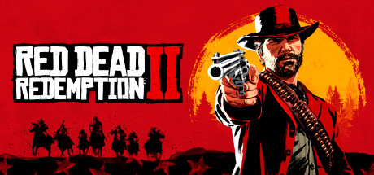
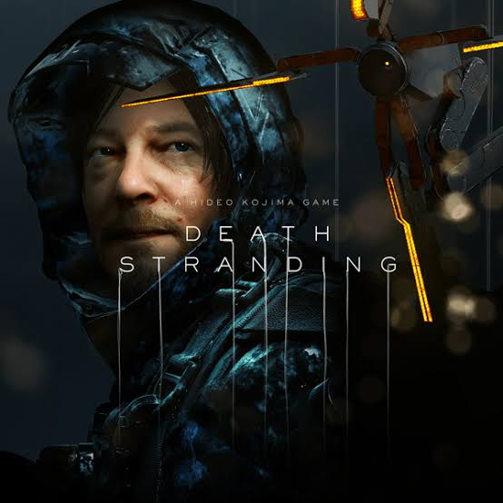
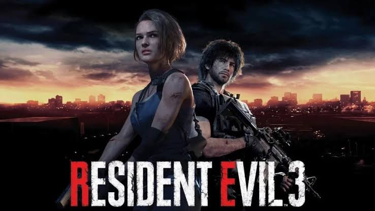

Red Dead Redemption 2 es un videojuego de acción-aventura western, en un mundo abierto y en perspectiva de primera y tercera persona, con componentes para un jugador y multijugador.

Death Stranding
Death Stranding es un videojuego de acción y exploración en mundo abierto desarrollado por Kojima Productions y publicado por Sony Interactive Entertainment para PlayStation 4 y por 505 Games para Microsoft Windows

Resident Evil 3
Resident Evil 3 —cuyo título original en Japón es Biohazard RE: 3— es un videojuego perteneciente al género de acción y aventura y horror de supervivencia

Sekiro: Shadows Die Twice
Sekiro: Shadows Die Twice es un videojuego de acción y aventura desarrollado por From Software y distribuido por Activision.